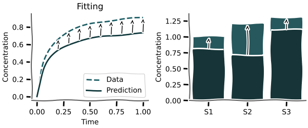

Fitting
from __future__ import annotations
import matplotlib.pyplot as plt
import numpy as np
import pandas as pd
from example_models import get_linear_chain_2v
from mxlpy import Simulator, fit, make_protocol, plot
Fitting¶
Almost every model at some point needs to be fitted to experimental data to be validated.

mxlpy offers highly customisable local and global routines for fitting either time series or steady-states.
The entire set of currently supported routines is
Single model, single data
steady_statetime_courseprotocol_time_course
Single model, single data, multiple initial guesses (a.k.a. multi-start optimisation)
group_steady_stategroup_time_coursegroup_protocol_time_course
Multiple model, single data
ensemble_steady_stateensemble_time_courseensemble_protocol_time_course
A carousel is a special case of an ensemble, where the general structure (e.g. stoichiometries) is the same, while the reactions kinetics can vary
carousel_steady_statecarousel_time_coursecarousel_protocol_time_course
Multiple model, multiple data
joint_steady_statejoint_time_coursejoint_protocol_time_course
Multiple model, multiple data, multiple methods
Here we also allow to run different methods (e.g. steady-state vs time courses) for each combination of model:data.
joint_mixed
Minimizers¶
- LocalScipyMinimizer, including common methods such as Nelder-Mead or L-BFGS-B
- GlobalScipyMinimizer, including common methods such as basin hopping or dual annealing
For this tutorial we are going to use the fit module to optimise our parameter values and the plot module to plot some results.
Let's get started!
Creating synthetic data¶
Normally, you would fit your model to experimental data.
Here, for the sake of simplicity, we will generate some synthetic data.
Checkout the basics tutorial if you need a refresher on building and simulating models.
# As a small trick, let's define a variable for the model function
# That way, we can re-use it all over the file and easily replace
# it with another model
model_fn = get_linear_chain_2v
res = (
Simulator(model_fn())
.update_parameters({"k1": 1.0, "k2": 2.0, "k_out": 1.0})
.simulate_time_course(np.linspace(0, 10, 101))
.get_result()
.unwrap_or_err()
).get_combined()
fig, ax = plot.lines(res)
ax.set(xlabel="time / a.u.", ylabel="Conc. & Flux / a.u.")
plt.show()
![No description has been provided for this image]()
# Create data for protocol fitting
protocol = make_protocol(
[
(1, {"k1": 1.0}),
(1, {"k1": 2.0}),
(1, {"k1": 1.0}),
]
)
res_protocol = (
Simulator(model_fn())
.update_parameters({"k1": 1.0, "k2": 2.0, "k_out": 1.0})
.simulate_protocol(
protocol,
time_points_per_step=10,
)
.get_result()
.unwrap_or_err()
).get_combined()
fig, ax = plot.lines(res_protocol)
ax.set(xlabel="time / a.u.", ylabel="Conc. & Flux / a.u.")
plt.show()
![No description has been provided for this image]()
Steady-states¶
For the steady-state fit we need two inputs:
- the steady state data, which we supply as a
pandas.Series - an initial parameter guess
The fitting routine will compare all data contained in that series to the model output.
Note that the data both contains concentrations and fluxes!
data = res.iloc[-1]
data.head()
x 0.500000 y 1.000045 v1 1.000000 v2 1.000000 v3 1.000045 Name: 10.0, dtype: float64
fit_result = fit.steady_state(
model_fn(),
p0={"k1": 1.038, "k2": 1.87, "k_out": 1.093},
data=res.iloc[-1],
minimizer=fit.LocalScipyMinimizer(),
).unwrap_or_err()
fit_result.best_pars
{'k1': np.float64(1.0000151204350427),
'k2': np.float64(2.000030255681428),
'k_out': np.float64(0.9999696662642722)}
If only some of the data is required, you can use a subset of it.
The fitting routine will only try to fit concentrations and fluxes contained in that series.
fit_result = fit.steady_state(
model_fn(),
p0={"k1": 1.038, "k2": 1.87, "k_out": 1.093},
data=data.loc[["x", "y"]],
minimizer=fit.LocalScipyMinimizer(),
).unwrap_or_err()
fit_result.best_pars
{'k1': np.float64(0.9840911924248404),
'k2': np.float64(1.968183856002372),
'k_out': np.float64(0.9840464518093077)}
By default, mxlpy will apply standard scaling to all fitting functions.
Specifically, it will calculate loss_fn(data - data.mean()) / data.std(), (pred - data.mean()) / data.std()).
To turn off this behaviour, set standard_scale=False in the fit functions
fit_result = fit.steady_state(
model_fn(),
p0={"k1": 1.038, "k2": 1.87, "k_out": 1.093},
data=data.loc[["x", "y"]],
minimizer=fit.LocalScipyMinimizer(),
standard_scale=False, # opt-out of standard scaling
).unwrap_or_err()
fit_result.best_pars
{'k1': np.float64(0.9829446963152438),
'k2': np.float64(1.9658848520862748),
'k_out': np.float64(0.982900790791772)}
Time course¶
For the time course fit we need again need two inputs
- the time course data, which we supply as a
pandas.DataFrame - an initial parameter guess
The fitting routine will create data at every time points specified in the DataFrame and compare all of them.
Other than that, the same rules of the steady-state fitting apply.
fit_result = fit.time_course(
model_fn(),
p0={"k1": 1.038, "k2": 1.87, "k_out": 1.093},
data=res,
minimizer=fit.LocalScipyMinimizer(),
).unwrap_or_err()
fit_result.best_pars
{'k1': np.float64(1.000000096685168),
'k2': np.float64(2.000000769218909),
'k_out': np.float64(1.0000000177469872)}
Protocol time courses¶
For the protocol time course fit we need three inputs
- an initial parameter guess
- the time course data, which we supply as a
pandas.DataFrame - the protocol, which we supply as a
pandas.DataFrame
Note that the parameter given by the protocol cannot be fitted anymore
You can use the make_protocol function to create a protocol (see above).
The protocol DataFrame should preferrably use a pd.TimedeltaIndex and is interpreted as "use the parameter values of that row until the given end point."
Here a second corresponds to a unit of simulation time, regardless of model time scale.
mxlpy will attempt to convert other indices, again assuming that a second in your data corresponds to a second of simulation time.
protocol
| k1 | |
|---|---|
| Timedelta | |
| 0 days 00:00:01 | 1.0 |
| 0 days 00:00:02 | 2.0 |
| 0 days 00:00:03 | 1.0 |
fit_result = fit.protocol_time_course(
model_fn(),
p0={"k2": 1.87, "k_out": 1.093}, # note that k1 is given by the protocol
data=res_protocol,
protocol=protocol,
minimizer=fit.LocalScipyMinimizer(),
).unwrap_or_err()
fit_result.best_pars
{'k2': np.float64(1.999999898779365), 'k_out': np.float64(1.0000002296536614)}
Group fitting (multi-start optimisation)¶
mxlpy supports group fitting, which is a single-model, single-data approach where the same model is fitted to the same data from many different initial parameter guesses.
This is exactly what is commonly called multi-start (or multistart) optimisation: each row of the p0 DataFrame is one start, the starts are run in parallel, and a GroupFit is returned. Use get_best_fit() to retrieve the best result and get_losses() to inspect the loss of every start.
A convenient way to generate diverse start guesses is
mxlpy.distributions.sample, as shown in the monte-carlo combination further down.
group_fit = fit.group_steady_state(
model_fn(),
data=res.iloc[-1],
p0=pd.DataFrame(
{
"k1": [1.037, 1.038, 1.039],
"k2": [1.86, 1.87, 1.88],
"k_out": [1.092, 1.093, 1.094],
}
),
minimizer=fit.LocalScipyMinimizer(tol=1e-6),
)
0%| | 0/3 [00:00<?, ?it/s]
33%|███▎ | 1/3 [00:03<00:06, 3.37s/it]
100%|██████████| 3/3 [00:03<00:00, 1.12s/it]
Time course¶
Time course fits are adjusted just the same
group_fit = fit.group_time_course(
model_fn(),
data=res,
p0=pd.DataFrame(
{
"k1": [1.037, 1.038, 1.039],
"k2": [1.86, 1.87, 1.88],
"k_out": [1.092, 1.093, 1.094],
}
),
minimizer=fit.LocalScipyMinimizer(tol=1e-6),
)
0%| | 0/3 [00:00<?, ?it/s]
33%|███▎ | 1/3 [00:04<00:08, 4.13s/it]
100%|██████████| 3/3 [00:04<00:00, 1.38s/it]
Protocol time course¶
As are protocol time courses
group_fit = fit.group_protocol_time_course(
model_fn(),
data=res_protocol,
protocol=protocol,
p0=pd.DataFrame(
{
"k1": [1.037, 1.038, 1.039],
"k2": [1.86, 1.87, 1.88],
"k_out": [1.092, 1.093, 1.094],
}
),
minimizer=fit.LocalScipyMinimizer(tol=1e-6),
)
0%| | 0/3 [00:00<?, ?it/s]
33%|███▎ | 1/3 [00:04<00:08, 4.14s/it]
100%|██████████| 3/3 [00:04<00:00, 1.38s/it]
Combining with monte-carlo approaches¶
An especially useful combination is combining group fitting with the monte-carlo capabilities of mxlpy to quickly get multiple fits from randomly selected initial conditions
from mxlpy.distributions import Uniform, sample
group_fit = fit.group_steady_state(
model_fn(),
data=res.iloc[-1],
p0=sample(
{
"k1": Uniform(1.037, 1.039),
"k2": Uniform(1.86, 1.88),
"k_out": Uniform(1.092, 1.094),
},
n=3,
),
minimizer=fit.LocalScipyMinimizer(tol=1e-6),
)
0%| | 0/3 [00:00<?, ?it/s]
33%|███▎ | 1/3 [00:02<00:05, 2.66s/it]
100%|██████████| 3/3 [00:02<00:00, 1.13it/s]
group_fit.get_losses()
0 0.000074 1 0.000074 2 0.000074 dtype: float64
best_model = group_fit.get_best_fit().model
Ensemble fitting¶
mxlpy supports ensemble fitting, which is a multi-model single data approach, where shared parameters will be applied to all models at the same time.
Here you supply an iterable of models instead of just one, otherwise the API stays the same.
ensemble_fit = fit.ensemble_steady_state(
[
model_fn(),
model_fn(),
],
data=res.iloc[-1],
p0={"k1": 1.038, "k2": 1.87, "k_out": 1.093},
minimizer=fit.LocalScipyMinimizer(tol=1e-6),
)
0%| | 0/2 [00:00<?, ?it/s]
50%|█████ | 1/2 [00:02<00:02, 2.88s/it]
100%|██████████| 2/2 [00:02<00:00, 1.44s/it]
To get the best fitting model, you can use get_best_fit on the ensemble fit
fit_result = ensemble_fit.get_best_fit()
And you can of course also access all other fits
[i.loss for i in ensemble_fit.fits]
[np.float64(7.41601231806269e-05), np.float64(7.41601231806269e-05)]
Time course¶
Time course fits are adjusted just the same
ensemble_fit = fit.ensemble_time_course(
[
model_fn(),
model_fn(),
],
data=res,
p0={"k1": 1.038, "k2": 1.87, "k_out": 1.093},
minimizer=fit.LocalScipyMinimizer(tol=1e-6),
)
0%| | 0/2 [00:00<?, ?it/s]
50%|█████ | 1/2 [00:03<00:03, 3.59s/it]
100%|██████████| 2/2 [00:03<00:00, 1.79s/it]
Protocol time course¶
As are protocol time courses
ensemble_fit = fit.ensemble_protocol_time_course(
[
model_fn(),
model_fn(),
],
data=res_protocol,
protocol=protocol,
p0={"k2": 1.87, "k_out": 1.093}, # note that k1 is given by the protocol
minimizer=fit.LocalScipyMinimizer(tol=1e-6),
)
0%| | 0/2 [00:00<?, ?it/s]
50%|█████ | 1/2 [00:02<00:02, 2.96s/it]
100%|██████████| 2/2 [00:03<00:00, 1.29s/it]
100%|██████████| 2/2 [00:03<00:00, 1.54s/it]
Joint fitting¶
Next, we support joint fitting, which is a combined multi-model multi-data approach, where shared parameters will be applied to all models at the same time
fit.joint_steady_state(
[
fit.FitSettings(model=model_fn(), data=res.iloc[-1]),
fit.FitSettings(model=model_fn(), data=res.iloc[-1]),
],
p0={"k1": 1.038, "k2": 1.87, "k_out": 1.093},
minimizer=fit.LocalScipyMinimizer(tol=1e-6),
)
Result(value=JointFit(
best_pars={
'k1': np.float64(1.000015131423652),
'k2': np.float64(2.0000302373070444),
'k_out': np.float64(0.9999697039457178)
},
loss=np.float64(0.00014832012454005317)
))
fit.joint_time_course(
[
fit.FitSettings(model=model_fn(), data=res),
fit.FitSettings(model=model_fn(), data=res),
],
p0={"k1": 1.038, "k2": 1.87, "k_out": 1.093},
minimizer=fit.LocalScipyMinimizer(tol=1e-6),
)
Result(value=JointFit(
best_pars={
'k1': np.float64(0.9999999759501081),
'k2': np.float64(2.000000125601711),
'k_out': np.float64(0.9999999032442961)
},
loss=np.float64(1.1916934272587782e-06)
))
fit.joint_protocol_time_course(
[
fit.FitSettings(model=model_fn(), data=res_protocol, protocol=protocol),
fit.FitSettings(model=model_fn(), data=res_protocol, protocol=protocol),
],
p0={"k2": 1.87, "k_out": 1.093},
minimizer=fit.LocalScipyMinimizer(tol=1e-6),
)
Result(value=JointFit(
best_pars={
'k2': np.float64(2.0000002702776998), 'k_out': np.float64(0.9999999478773521)
},
loss=np.float64(8.073316155298656e-07)
))
Mixed joint fitting¶
Lastly, we support mixed-joint fitting, where each analysis takes it's own residual function to allow fitting both time series and steady-state data for multiple models at the same time.
fit.joint_mixed(
[
fit.MixedSettings(
model=model_fn(),
data=res.iloc[-1],
residual_fn=fit.steady_state_residual,
),
fit.MixedSettings(
model=model_fn(),
data=res,
residual_fn=fit.time_course_residual,
),
fit.MixedSettings(
model=model_fn(),
data=res_protocol,
protocol=protocol,
residual_fn=fit.protocol_time_course_residual,
),
],
p0={"k2": 1.87, "k_out": 1.093},
minimizer=fit.LocalScipyMinimizer(tol=1e-6),
)
Result(value=JointFit(
best_pars={
'k2': np.float64(2.000000063414393), 'k_out': np.float64(1.0000000624312815)
},
loss=np.float64(0.00012917865723529877)
))
First finish line
With that you now know most of what you will need from a day-to-day basis about fitting in mxlpy.Congratulations!
Advanced topics / customisation¶
All fitting routines internally are build in a way that they will call a tree of functions.
minimizerresidual_fnintegratorloss_fn
You can therefore use dependency injection to overwrite the minimisation function, the loss function, the residual function and the integrator if need be.
from functools import partial
from typing import cast
from mxlpy.integrators import Scipy
Parameterising scipy optimise¶
optimizer = fit.LocalScipyMinimizer(tol=1e-6, method="Nelder-Mead")
Custom loss function¶
You can change the loss function that is being passed to the minimsation function using the loss_fn keyword.
Depending on the use case (time course vs steady state) this function will be passed two pandas DataFrames or Series.
def mean_absolute_error(
x: pd.DataFrame | pd.Series,
y: pd.DataFrame | pd.Series,
) -> float:
"""Mean absolute error between two dataframes."""
return cast(float, np.mean(np.abs(x - y)))
(
fit.time_course(
model_fn(),
p0={"k1": 1.038, "k2": 1.87, "k_out": 1.093},
data=res,
loss_fn=mean_absolute_error,
minimizer=fit.LocalScipyMinimizer(),
)
.unwrap_or_err()
.best_pars
)
{'k1': np.float64(1.0000000027295881),
'k2': np.float64(2.000000092886823),
'k_out': np.float64(1.000000058084113)}
Post-processing the simulation¶
Derived values and readouts are calculated per time point, so quantities that depend on the whole time course (e.g. NPQ, which normalises the maximal fluorescence of every pulse by the first one) can't be expressed in the model itself.
For these you can pass a postprocess_fn to every fitting routine.
It receives the combined simulation result (variables, derived values, readouts and fluxes) at the time points of the data and has to return a DataFrame containing the data columns, which is then compared to the data by the loss function.
Here, for example, we fit to data that was normalised by its last value.
def relative_to_steady_state(df: pd.DataFrame) -> pd.DataFrame:
"""Normalise every column by its last value."""
return df / df.iloc[-1]
(
fit.time_course(
model_fn(),
p0={"k1": 1.038, "k2": 1.87, "k_out": 1.093},
data=relative_to_steady_state(res),
postprocess_fn=relative_to_steady_state,
minimizer=fit.LocalScipyMinimizer(),
)
.unwrap_or_err()
.best_pars
)
{'k1': np.float64(1.0000017019600993),
'k2': np.float64(2.0000038553586132),
'k_out': np.float64(1.000001873555161)}
Custom integrator¶
How the model is simulated during fitting is configured by a runner (see the integrator configuration). You can change the default integrator to an integrator of your choice by passing a runner with a partial application of the class of any of the existing ones.
Here, for example, we choose the Scipy solver suite and set the default relative and absolute tolerances to 1e-6 respectively.
from mxlpy import KineticRunner
(
fit.time_course(
model_fn(),
p0={"k1": 1.038, "k2": 1.87, "k_out": 1.093},
data=res,
runner=KineticRunner(integrator=partial(Scipy, rtol=1e-6, atol=1e-6)),
minimizer=fit.LocalScipyMinimizer(),
)
.unwrap_or_err()
.best_pars
)
{'k1': np.float64(1.0000001733968826),
'k2': np.float64(2.0000005388652027),
'k_out': np.float64(1.0000001220910617)}